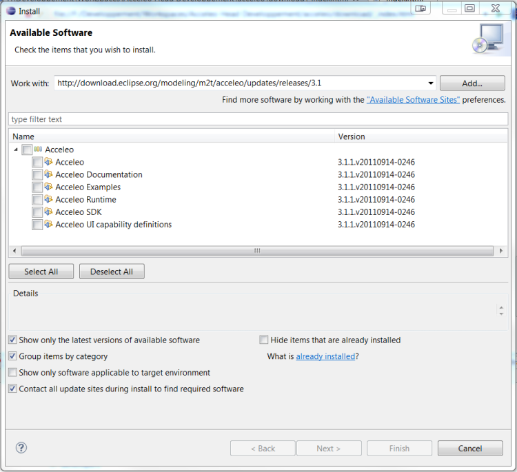

Acceleo can be downloaded and installed in a number of ways. If you have an existing Eclipse installation and simply wish to install Acceleo in it, Installing through the update site is the easiest way. If you'd rather install a new Eclipse with Acceleo, you may want to take a look at the facilities provided by the amalgamation project.
For those of you that need to retrieve the zips of Acceleo, you can either look at the latest releases or the legacy releases if you need one of the 2.x releases.
Note that whatever the installation procedure you choose, examples are available from the menu right-click => New => Examples => Acceleo Plug-ins.
Install with the Amalgamation project
- Download the latest EPP modeling bundle
-
Open the discovery UI

-
Select Acceleo and "Finish" the wizard

Install with the update site
The easiest (and quickest) way of installing Acceleo is to use the Helios update-site.
- Install your preferred Eclipse distribution from the Eclipse download page.
-
Go to Help => Install New Software...

-
In the upper part, click Add and type in the location:
- For the latest release (3.2.1):
http://download.eclipse.org/modeling/m2t/acceleo/updates/releases/3.2 - For the Acceleo 3.2.x branch:
http://download.eclipse.org/modeling/m2t/acceleo/updates/releases/3.2 - For the Acceleo 3.1.x branch:
http://download.eclipse.org/modeling/m2t/acceleo/updates/releases/3.1 - For the Acceleo 3.0.x branch:
http://download.eclipse.org/modeling/m2t/acceleo/updates/releases/3.0
- For the latest release (3.2.1):
-
Select this new update site in the combo box and tick Acceleo in the lower
panel, such as shown below.
 - Click Finish, read and accept the Eclipse Public License, and watch Acceleo install itself along with its dependencies.
Download the latest Acceleo
The latest versions of Acceleo are the 3.x stream builds. Check them out on the project's download page.
Download legacy releases of Acceleo
Maintenance builds of Acceleo 2.x are still available on the legacy versions download page.